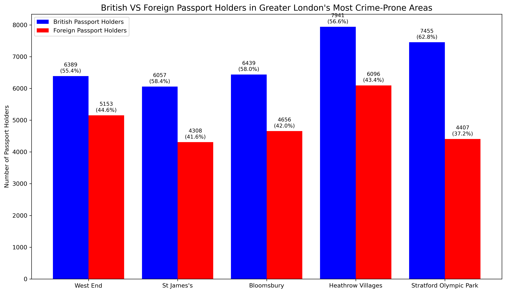

British VS Foreign Passport Holders in Greater London's Least Crime-Prone Areas

Legend
- British: 5672 (81.1%)
- British: 5494 (79.1%)
- British: 6095 (86.2%)
- British: 11353 (87.4%)
- British: 4169 (72.0%)
- Foreign: 1318 (18.9%)
- Foreign: 1449 (20.9%)
- Foreign: 974 (13.8%)
- Foreign: 1630 (12.6%)
- Foreign: 1624 (28.0%)